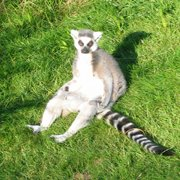

Lemurienii sunt primate mici cunoscute drept "prosimieni", ceea ce înseamnă "înaintea maimuțelor". Lemurienii trăiesc în libertate doar în insula Madagascar, lângă coasta orientală a Africii, și în Insulele Comore din apropiere. Mărimea lor variază, existând de la lemurieni foarte mici și până la exemplare de 7 sau 9 kilograme. Durata medie de viață a lemurienilor este de 18 ani, cea mai scurtă pentru orice specie de primate.
Cum arată lemurienii?
Ce mănâncă lemurienii?
Cum comunică lemurienii?
Câte feluri de lemurieni există?
Au trăit primii lemurieni în Africa?
Ce s-a întâmplat cu primii lemurieni?
Lemurienii sunt mamifere primate, înrudite cu maimuțele antropoide și cu oamenii. Majoritatea lemurienilor au nasuri lungi și ascuțite, care contribuie la excelentul lor simț olfactiv. Culoarea blănii lor variază de la maro roșcat la gri. Lemurienii variază în dimensiuni de la lemurianul șoarece pigmeu, care este cel mai mic și cântărește 30 de grame și până la lemurianul Indri, care este unul dintre cei mai mari și poate cântări până la 9 kilograme. Lemurienii au un simț olfactiv excelent și o vedere foarte bună, chiar și pe timpul nopții.

Majoritatea lemurienilor mănâncă fructe, frunze și alte plante din pădurea tropicală. Unii preferă nectarul, iar alții mănâncă numai bambus. Lemurianul aye-aye preferă să extragă insecte delicioase din scoarța copacilor folosindu-și degetul mijlociu în formă de gheară. Lemurienii gri mănâncă boboci de bambus din vârful copacilor. Lemurienii cu coadă inelată mănâncă flori, precum și ierburi și animale mai mici. Lemurienii care trăiesc în grădini zoologice pot primi tratații gastronomice precum prăjiturele vegetariene.

Lemurienii comunică utilizându-și simțul olfactiv. Au în partea din spate și pe labe glande odorifere care secretă mirosuri pe orice suprafață pe care o ating. Atunci când alți lemurieni adulmecă mirosurile respective, știu că un alt lemurian a trecut pe acolo. De asemenea, lemurienii își flutură în aer cozile lungi pentru a comunica. Cozile îi ajută să își mențină echilibrul atunci când sar dintr-un copac în altul.
Majoritatea specialiștilor consideră că există aproximativ 88 de specii de lemurieni în viață, organizate în cinci familii de lemurieni. Iată câteva informații amuzante despre diverși lemurieni:
| Lemurian | Informații amuzante |
|---|---|
| Șoarece și pitic | Cele mai mici primate, sunt animale arboricole nocturne. |
| Coadă inelată | Cel mai cunoscut lemur, grație cozii sale distinctive alb cu negru. Extrem de sociabil, trăiesc în grupuri de până la 30 de lemurieni, dominate de femele. |
| Sportiv | Acești lemurieni sunt animale arboricole nocturne. Când se află la sol, țopăie precum cangurii. |
| Indri | Acesta este unul dintre cei mai mari lemuri. Este un animal diurn. Are picioare puternice și poate sări până la 10 metri între vârfurile copacilor. |
| Aye-aye | Acesta este cel mai mare mamifer primat nocturn. Trăiește individual (nu în grupuri). Are fața asemănătoare unei rozătoare. |
Oamenii de știință au crezut că lemurienii au apărut pe continentul african înainte de separarea zonei cunoscute acum drept Madagascar de continent pentru a forma o insulă. Cu toate acestea, studii recente au demonstrat că Madagascarul a fost separat de Africa înainte de evoluția lemurienilor. În consecință, oamenii de știință cred acum că este posibil ca lemurienii să fi migrat pe insulă pe trunchiuri plutitoare și apoi să fi trăit și evoluat în izolare față de alte primate.
Trăind în izolare în Madagascar, lemurienii au evoluat într-o gamă uimitoare de specii. Fosilele rămase indică faptul că unele dintre specii erau foarte mari în comparație cu speciile care există în prezent. Se estimează că exemplarele uneia dintre speciile extincte cântăreau între 160 și 200 de kilograme, asemenea unui mascul de gorilă adult.
Notă: Următoarele câmpuri sunt doar pentru exersare; feedbackul nu este colectat.